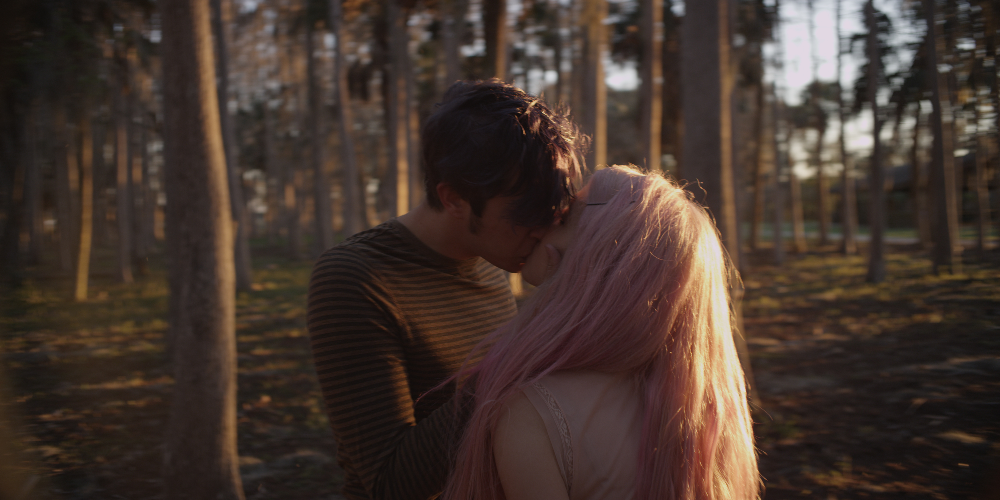

hi this is a test 2

gah
I am currently working on: a valentine inspired by the ILOVEYOU virus, a short film for Borscht Diez, and a novella about a girl named Cami who is trying to bring her dead mother back by building thousands of life simulations.
I am thinking about: the dangers of letting algorithms curate your existence, perception altering information, politics as binary, and whether or not to adopt a greyhound.
Here's a recent pic of me:
 And here is what the sky looks like in Florida:
And here is what the sky looks like in Florida:
 xo
devyn
xo
devyn